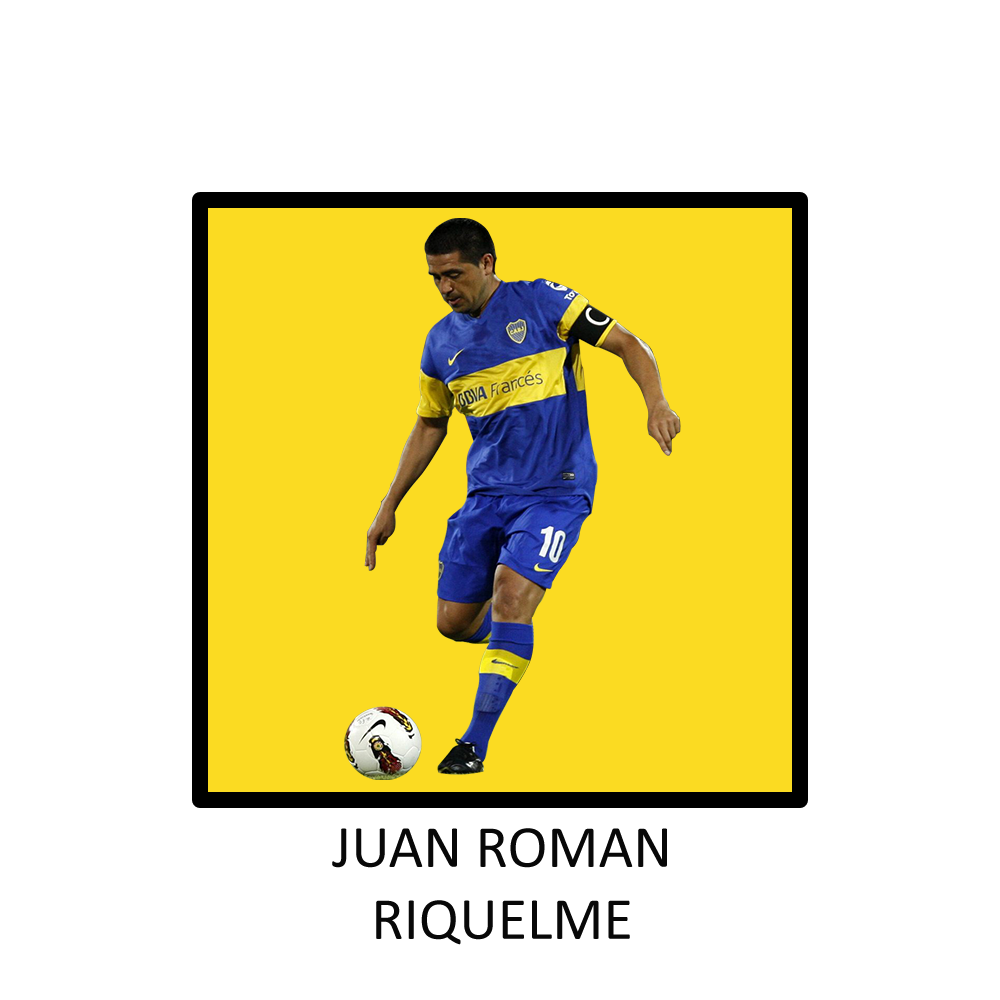
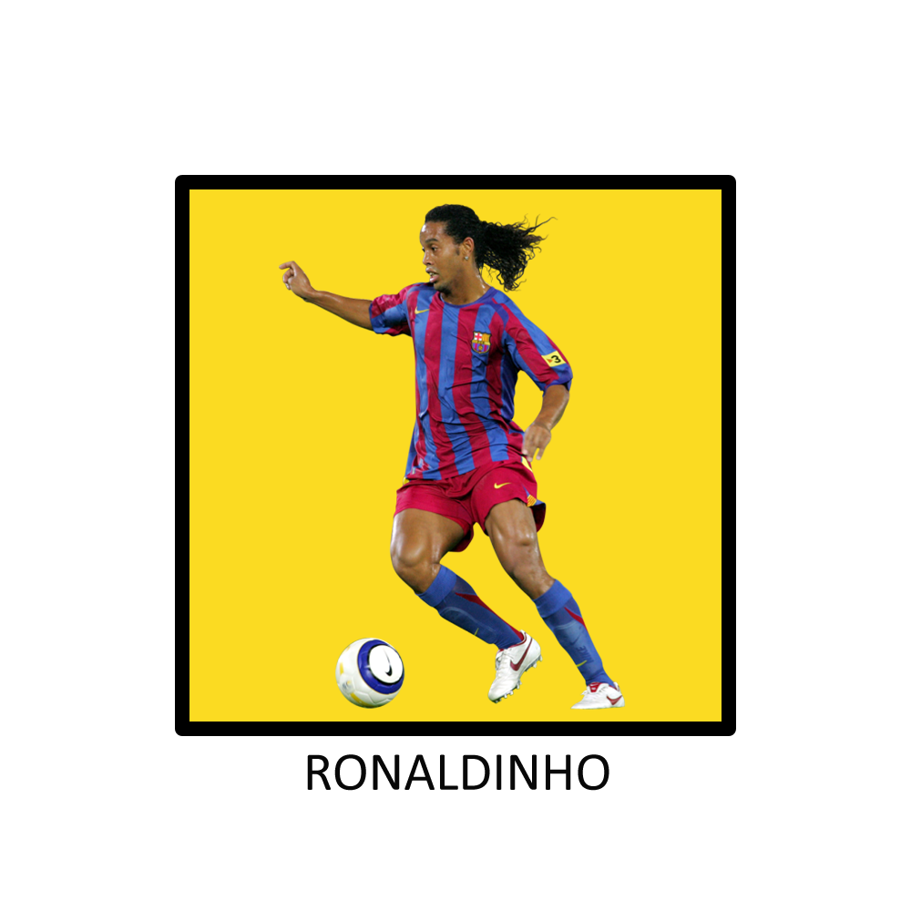
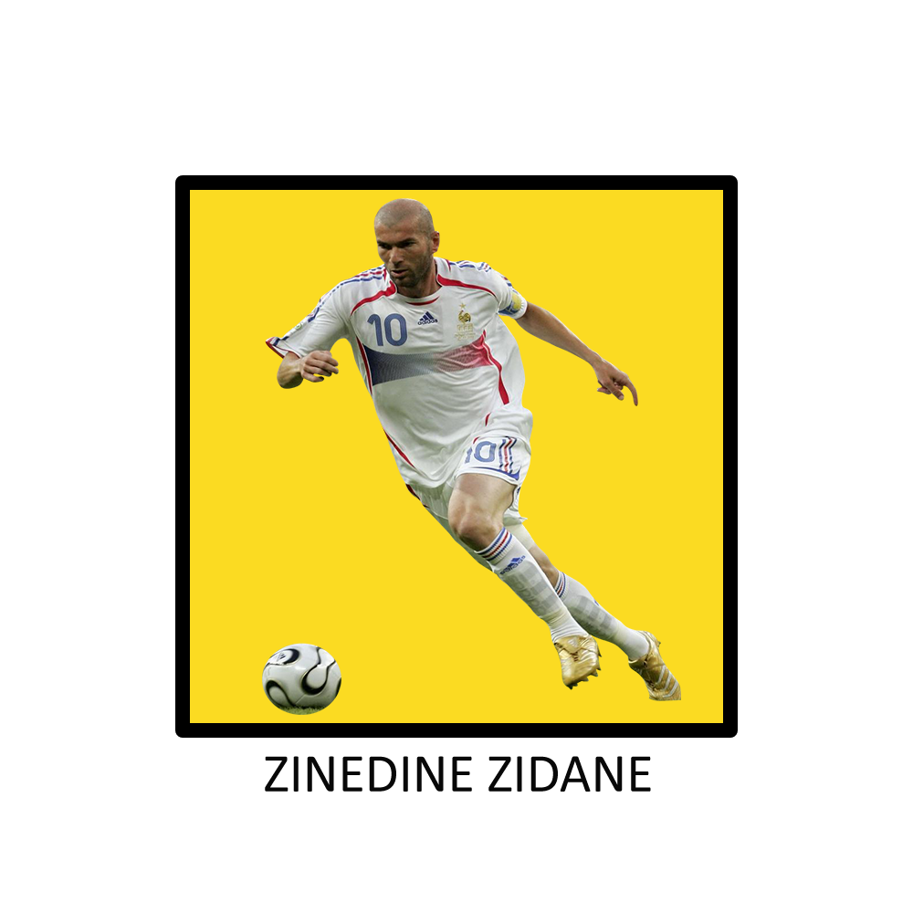
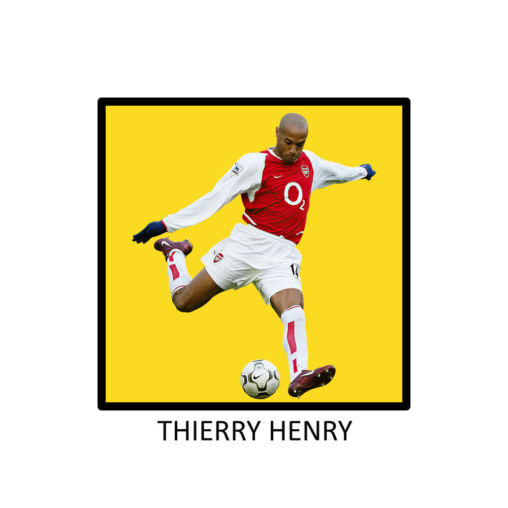

JUGADORES HISTÓRICOS  Click aquí para ver a Roman Que se puede decir sobre Roman? sobre el último 10, el jugador que se le viene a todo el mundo cuando se habla de enganches... mi ídolo. No existe otro jugador de fútbol en la historia que me genere más satisfacción a la hora de ver fútbol, como él. Literalmente, empecé a generar amor por éste deporte por Roman, referente como ninguno al que siempre intenté imitar jugando a la pelota desde chico, al que miraba cada jugada y luego de analizarla mínimo 10 veces, seguía sin entender como podía haber regateado esa situación, o meter ese pase entre líneas habilitando a cualquier delantero, o cambios de frentes para cualquier lateral que juegue con él, o también poner la cola como pocos pudieron sin que puedan desestabilizarlo sin hacerle falta, o esos tiros libres espectaculares contra cualquier arquero que se le plante... que pegada por favor. Pocos la dejaron tan chiquita pisándola como éste señor, al que el mismísimo Zidane le pidió intercambiar la camiseta cuando Zinedine terminó de jugar su último partido como profesional para el Real Madrid. Por todo esto y más, gracias por tanto fútbol Roman, y perdón por los que se dignaron a menospreciarte como jugador. FÚTBOL  Click aquí para ver a Ronaldinho Si Neymar era diversión, que le queda a éste mago? Un jugador que transmitía pura alegría con su magia, talento y habilidad. A cualquier defensa del equipo rival seguramente antes de jugar contra ésta bestia, les temblaban las piernas por el semejante baile que se iban a comer, sin exagerar. Un futbolista que cualqueir jugada que se le pasaba por la cabeza, podía ejecutarla con demasiada calidad sin ningun problema. Fue hermoso poder ver jugar Dinho, que en cualquier situación, tiraba magia con una soltura increíble que por supuesto, le salía a la perfección, como por ejemplo bicicletas, jueguitos, si venía en el aire pincharla y dejarla muerta en el piso con un simple toque de puntín, y por supuesto como olvidarse de su tan querida elástica. SAMBA Click aquí para ver a Iniesta El cerebro, el español que más disfruté ver jugar a la pelota. Ese jugador de fútbol que si no lo conoces, tiene pinta de que ejerce cualquier otra profesión, menos de futbolista. Éste si que tuvo y siempre va a tener la cancha totalmente clara en su cabeza, donde se encuentran los compañeros, donde van a estar y donde no los iba a encontrar. Una claridad absoluta a la hora de entregar la pelota, habilitar un compañero, o simplemente (o muy complejamente) retener la pelota hasta que le hagan falta al mejor estilo Riquelme (que no se me note el fanatismo). Aquél jugador que cualquier español fan del fútbol nunca se va a poder olvidar, por que le dió un mundial a su selección española con un gol de otro partido en Sudáfrica 2010. CEREBRO  Click aquí para ver a Zidane El gran Zizou, el que ganó nada más y nada menos que 3 champions con el Real Madrid como DT, pero estamos acá para hablar del francés como jugador. Elegancia pura, uno más de los galácticos del Madrid para algunos, y para otros el más determinante y fundamental. Pases, remates, regates, entradas y más para definirlo como un simple crack. Definitivamente, un jugador que me hubiese gustado disfrutar más, pero lamentablemente por mi corta edad, no coincidimos tanto tiempo. Todos se acordarán de él por el cabezazo a Materazzi en la final del mundo del 2006 contra Italia, pero sin lugar a dudas, deberían resaltar primero su calidad como uno de los mejores volantes de la historia, antes que cuaquier acción como la anteriormente nombrada. ROULETTE  Click aquí para ver a Henry Si de jugadores hábiles, rápidos y regateadores hablamos, imposible olvidarse de Titi Henry, un futbolista que a simple vista, parecía más un 9 de área como Luca Toni u Oliver Giroud, pero cuando lo veías jugar, te deleitabas con las zancadas imparables a velocidad que metía, con un dominio total de la pelota pegadita al pie, y con definiciones al lado del palo como muy pocos podían. Imaginación pura para sacar ventaja del rival a partir de sus movimientos, un delantero muy completo admirado por cada hincha del Arsenal y por cualquier amante del fútbol. ATAQUE Previous Next